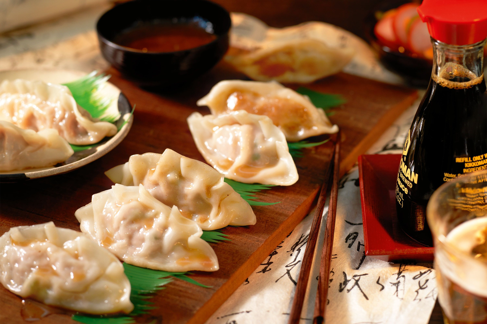

Pork Dumplings Recipe
If you're looking for the best steamed pork dumplings recipe on the internet, you've come to the right place. These pork dumplings are as easy to assemble and steam as they are to eat.

The Best Pork Dumplings
Ready to make the best steamed pork dumplings of your life? You'll find the full, step-by-step recipe below — but here's a quick overview of what you can expect:
INGREDIENTS
- 100 (3.5 inch square) wonton wrappers
- 1 ¾ pounds ground pork
- 1 tablespoon minced fresh ginger root
- 4 cloves garlic, minced
- 2 tablespoons thinly sliced green onion
- 4 tablespoons soy sauce
- 3 tablespoons sesame oil
- 1 egg, beaten
- 5 cups finely shredded Chinese cabbage
DIRECTIONS
- In a large bowl, combine the pork, ginger, garlic, green onion, soy sauce, sesame oil, egg and cabbage. Stir until well mixed.
- Place 1 heaping teaspoon of pork filling onto each wonton skin. Moisten edges with water and fold edges over to form a triangle shape. Roll edges slightly to seal in filling. Set dumplings aside on a lightly floured surface until ready to cook.
- Arrange dumplings in a covered bamboo or metal steamer so they don't touch to prevent them from sticking together; steam for 15 minutes, or until pork is cooked through.